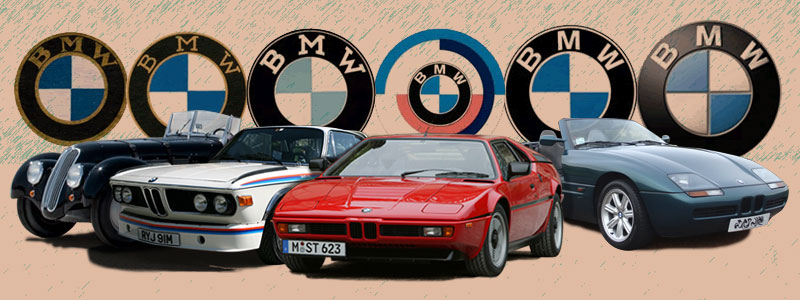

Sejarah
Siapa sih yang tidak kenal BMW?
Merek otomotif asal Jerman ini terkenal dengan unit-unitnya yang mewah. BMW bisa dikatakan memiliki sejarah yang cukup panjang. Lebih dari satu abad, produsen ini tak sekadar menawarkan kemewahan, tapi juga performa mesin yang fantastis. Langsung saja, simak timeline sejarah BMW berikut ini. BMW memiliki nama resmi BMW AG (Bayerische Motoren Weke Aktiengesellschaft). Dalam bahasa Inggris berarti Bavarian Engine Works Company. Nama ini diambol dari tempat berdirinya pabrik pertama BMW AG, yakni di Bavaria, Jerman. Awal Mula BMW Bermula sebagai Produsen Mesin Pesawat. BMW AG merupakan hasil merger dua perusahaan pada 1916, yakni Rapp-Motorenwerke GmbH dan Flugmaschinenfabrik Gustav Otto. Pada saat itu, BMW fokus memproduksi mesin pesawat untuk Kekaisaran Jerman. Satu tahun setelah merger, logo baling-baling ikonik milik BMW mulai menghiasi produk-produk yang diluncurkan.